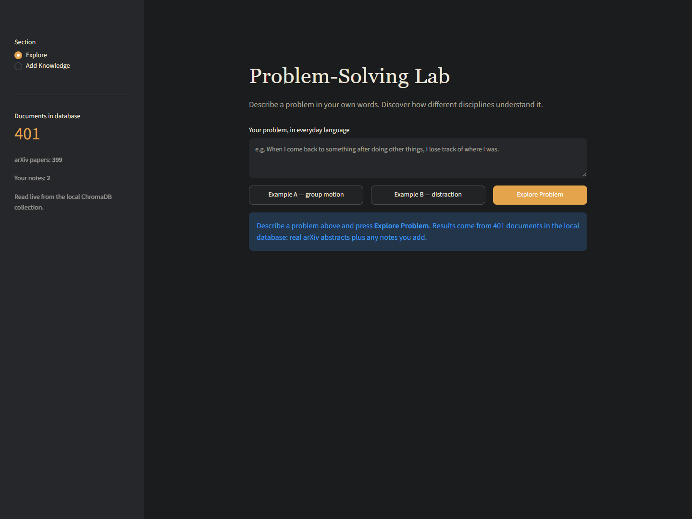
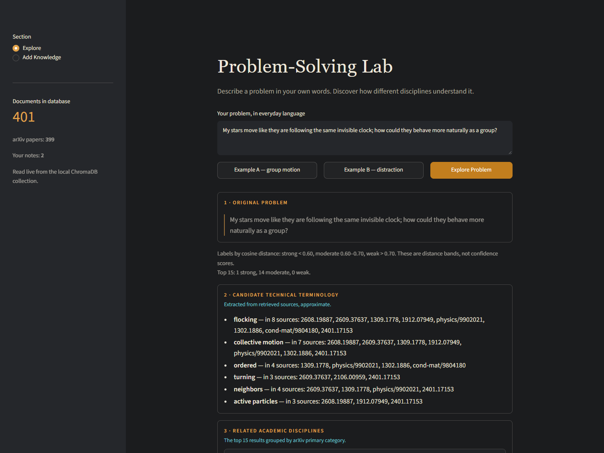
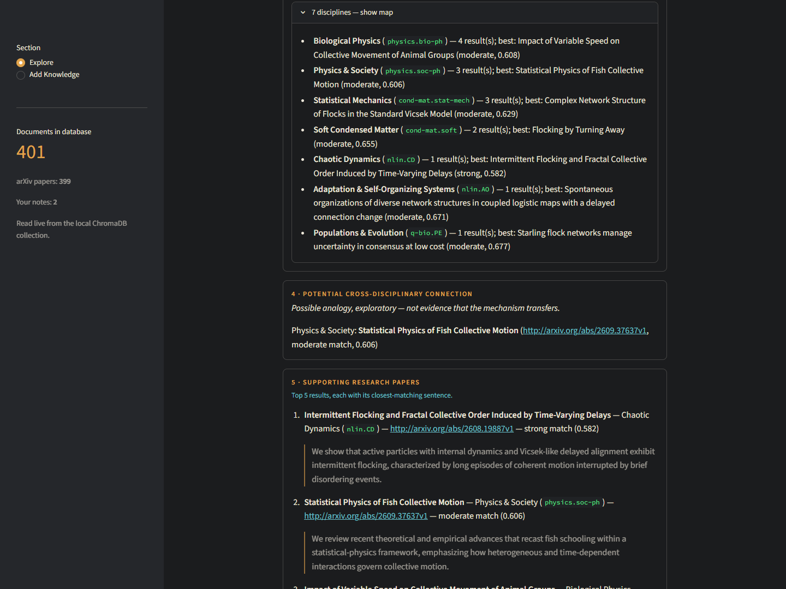

Research tool — BarryMade
Problem-Solving Lab
Sometimes we can describe a problem but do not know the technical terms to search for. Problem-Solving Lab starts with everyday language and retrieves related research to help identify what the problem might be called and where to investigate next.
- Kind
- Local research prototype
- Built with
- Python, ChromaDB, Streamlit
- When
- October 2026
Runs locally with Python and a local database. This page is a project write-up.
Inside the local prototype
Follow a question into research.
Actual app screenshots.
Select an image to open the full-resolution view.



From a question to a research direction
Find the words
for the problem.
- 01 / DescribeAn everyday problem, in your own words.
- 02 / RetrieveSearch titles and abstracts by semantic similarity.
- 03 / ConnectInspect candidate terms, disciplines, and sources.
- 04 / InvestigateEdit a research hypothesis. Save and rediscover notes.
Explore, connect, keep
In Explore, enter a question and select Explore Problem. A Discovery Card organizes the top 15 matches into candidate terminology, academic disciplines, source excerpts, and a possible connection to another field. It ends with a template hypothesis to edit and test.
Add Knowledge saves a note and optional title into the same persistent database. Notes become searchable immediately and remain after restarting; they are labeled separately from research papers. The CLI also supports search, add, statistics, and Markdown card export.
A small, traceable research corpus
The development dataset contains 399 real arXiv papers, spanning areas such as human-computer interaction, collective behavior, and robotics. Each record combines one title and abstract, with the paper ID, categories, publication date, and source URL.
ChromaDB stores the records locally. The all-MiniLM-L6-v2 model creates 384-dimensional embeddings, compared with cosine distance. Candidate terms are extracted with frequency-based heuristics. This version uses no LLM or RAG generation.
From idea to interaction
The prompt log traces a shift from suggesting solutions toward helping people discover terminology and cross-disciplinary analogies. Development progressed through persistence testing, arXiv inspection, corpus ingestion, retrieval evaluation, and the CLI Discovery Card.
The final code adds a Streamlit interface over the same retrieval and card modules. ChatGPT supported ideation, Claude.ai supported planning, and Claude Code supported implementation and debugging, as documented in the README. The prompt log records the earlier development prompts; it does not yet include the Streamlit phase.
What the prototype demonstrated
The README records two retrieval examples connecting informal descriptions to academic language:
- A question about stars moving to an “invisible clock” retrieved Intermittent Flocking and Fractal Collective Order Induced by Time-Varying Delays at rank 1, cosine distance 0.582.
- A question about notifications and refocusing retrieved Mitigating the Effects of Reading Interruptions by Providing Reviews and Previews at rank 3, cosine distance 0.537.
These are documented examples from the development corpus, not a general accuracy benchmark. The evaluation scripts compare shared non-stopword tokens to examine matches beyond exact wording. Distance is a retrieval measure, not a confidence percentage.
Run it locally
Download or clone the GitHub repository, install Python 3.13, then open PowerShell in the project folder:
py -3.13 -m venv .venv
.\.venv\Scripts\python.exe -m pip install -r requirements.txt
.\.venv\Scripts\python.exe fetch_arxiv.py
.\.venv\Scripts\python.exe ingest.py
.\.venv\Scripts\python.exe -m streamlit run app.pyOpen http://localhost:8501 after starting Streamlit. For the terminal interface, run .\.venv\Scripts\python.exe cli.py.
The dataset and database are not included in GitHub. The fetch and ingest steps build your own database in data/chroma/; the embedding model downloads on first use. Initial setup needs internet access. Once built, search and note storage run locally. A rebuilt arXiv corpus may differ from the development snapshot.
Limits and next questions
The corpus is small and documents are not chunked, so long abstracts can exceed the model’s 256-token input limit. Extracted terminology is approximate, and connections across fields are exploratory analogies rather than verified solutions. Larger coverage, better chunking, and richer explanations remain future work.